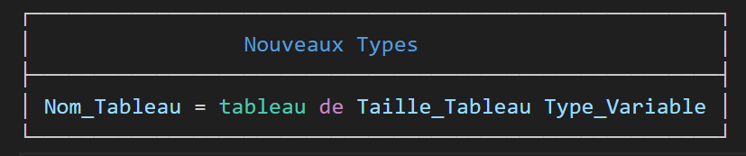
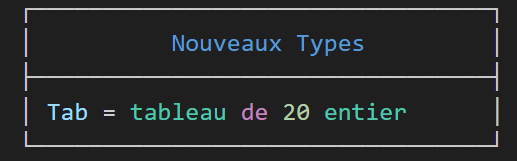

Le T.D.N.T
Un T.D.N.T (Tableau deD
éclaration deNouveaux Types) est utilisé pour déclarer de nouveaux types.
Dans notre cas, il est utilisé uniquement pour les tableaux.
Un T.D.N.T est toujours écrit au niveau du PP avec le T.D.O.G .
Syntaxe:

Exemple :

C’est assez simple :
à gauche, on met le nom de la variable (celui qu’on utilise dans l’en-tête des fonctions et dans certains T.D.O)
à droite, on indique le type de la variable.